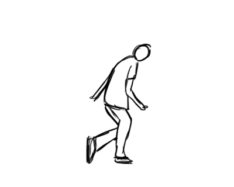

薛宋平
有时，我很喜欢安静的世界，自己安静地看看书、听听歌;
有时，我很喜欢热闹的世界，和朋友们一起玩闹，一起谈天说地。
这就是我，有时安静有时活泼的我。
我很爱笑，也喜欢交朋友，我会幽默风趣地和朋友分享我的快乐
。
这就是我，性格开朗、直率。、幽默的我
我喜欢运动，寒假在家里总是和父母在门口阳台打篮球，当写作业时眼睛累了，
我便会到处走走，或者跳跳绳，我还喜欢和朋友、家长一起出去爬山，一起出去旅游
。
这就是我，热爱运动的我当我遇到困难，遇到挫折时，我绝不会退缩，我会迎难而上;
当我要做一件事时，我会尽全力把这件事做得最好。这就是我，勇于攀登、坚持不懈的我。
当考试不如意时，我不会沮丧，我会找出自己错误的地方，
我不会让自己在同一个地方一而再再而三地犯错;
当别的同学成绩追上我时，
我会憋着一股劲努力学习;但我有不懂的问题时，
我会自己思考、实验，也会向他人请教，
我会不达目的不罢休。这就是我，积极进取、不甘于落后、勇于探究、盘根问底的我。
我是一个“铁杆书虫”我喜欢读各个方面的书，
经常一读书就忘记了一切，
给我带来了一些麻烦，不过读书也使我受益匪浅，
读书使我拓宽视野，增长知识面，
懂得许多人生哲理。这就是我，热爱读书的我。
我对未来拥有美好的憧憬：
当一位数学家，兼职作家。
我知道只有美好的理想是不行的，所以我现在会好好学习，努力学好技术
，为未来打下基础。这就是我，拥有理想并努力追寻的我。
这就是我，现在，你们了解我了吗?
